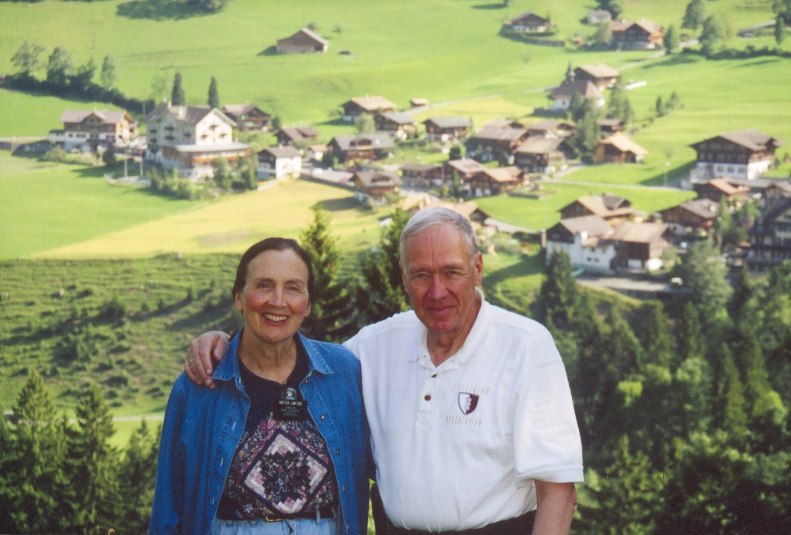
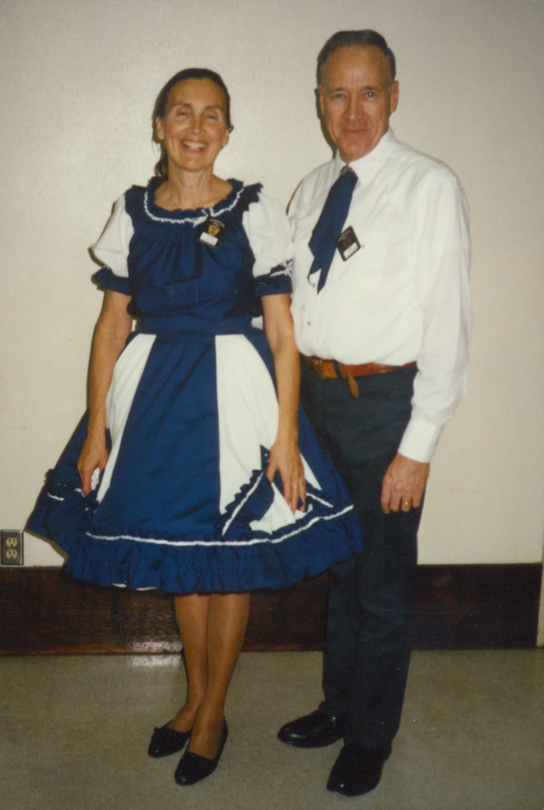
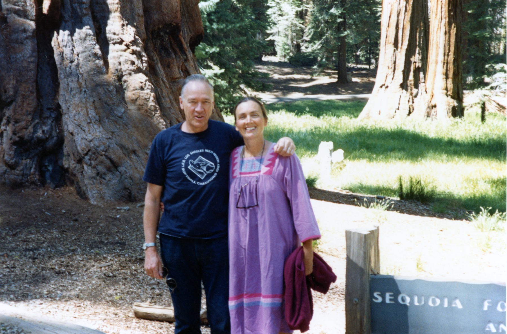

Jerusalem ruins portrait is my #1: warm light, ancient stone, both of them looking wonderful, and the Holy Land setting quietly echoes the sacred songs on the record. Swiss alpine village is my #2, that green hillside is gorgeous and it's a joyful shot of the two of them together. Both are high enough resolution for the cover. The rest are below if you want to compare.
The most portrait-like of the set. Golden light, ancient stone, both dressed nicely. The Holy Land backdrop pairs beautifully with the sacred repertoire, and it crops to a clean square with both faces still large.

The most scenic of the set, that green hillside is gorgeous, and you can spot Grandma's missionary badge. A joyful shot of the two of them. Faces sit a touch smaller in the frame, but it still reads well.

Taken the same year the album was recorded (Labor Day weekend, 1989). Matching outfits, real personality, them as a performing pair. The tradeoff is the plain wall and dated-snapshot look, but the meaning is hard to beat.
Striking. The blue ice reads as one cohesive color story, they are centered and close with warm smiles, and it crops to square easily. The distinctive option if you want something that pops in a feed.

Beautiful trees, but the most casual of the bunch (t-shirt, muumuu, a “SEQUOIA” sign creeping in) and the faces are small in a wide frame. Weakest fit for a cover.
Only a 207×207 web copy exists, far below the 3000×3000 streaming minimum, and it is Ray solo so it does not represent the duet. Included for completeness. We would need the original scan to consider it.